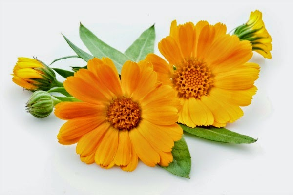

"Umesto da pesnik piše poeziju, poezija piše pesnika" - Branko Miljković
"Pesnik može da preživi sve, osim štamparkse greške" - Oskar Vajld
"Umetnost je ustvari ogledalo posmatrača - a ne života" - Oskar Vajld

Pesmo moja, zakiti se cvetom,
pesmo moja, zamiriši svetom;
još sva srca ohladnela nisu, -
poznaće te, pesmo, po mirisu!
Poznaće te da si čedo milja,
da ti ljubav majka i dadilja.
Da si rada pevati o slasti,
razumeće što ne umeš kaz'ti.
Pesmo moja, već si na poletu,
pozdravi mi sve na ovom svetu,
pozdravi mi slavlje i golube,
i sva srca što se silno ljube
JJ Zmaj
Izvor: Prelepa poezija